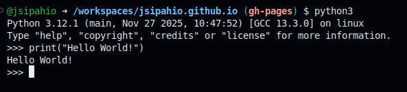

NET264 - Unix/Linux System Administration: Weeks 2 and 3
These two weeks will cover shell scripting, Python scripting, regular expressions, and the Vim editor as they pertain to being a Linux system admin. These weeks correspond to Chapter 7 in the 5th edition of the book, and Chapter 2 of the 4th edition book. For this class, you only need to worry about Python, and not Perl or Ruby which are mentioned in the book.
Introduction
Scripting allows you to automate tasks that are boring and repetitive. This reduces the chance for error, and provides documentation for how these tasks are completed. The focus in this class is on smaller, day to day scripts you'd write as a sysadmin, rather than larger scale scripting for fully automated server deployment, for example. We'll cover both shell and Python scripting. Shell scripts are more portable, as they are typically very small and only invoke commands that are available on pretty much any Unix-like OS. Python scripting is much more powerful, but much of Python's power comes from its rich ecosystem of 3rd party libraries and modules, making it less portable across different systems without significant setup.
Shell Basics
This should mostly be a review of things you learned in NET220. But, if it's been a while, this can be a helpful refresher.
Redirection and Piping
The most powerful component of command shells and shell scripting is redirection and piping. This allows commands to interact with each other's output. The shell has three communication channels it makes available to processes: STDOUT (standard output), STDIN (standard input), and STDERR (standard error output). Each open I/O channel is provided a file descriptor, a small integer than provides a way to reference open files. STDIN is always 0, STDOUT is always 1, and STDERR is always 2. In a typical interactive shell session, STDIN is read from the keyboard, and STDOUT and STDERR are written to the terminal on the computer monitor. The redirection operators (<, >, >>) allow you to change the destination of the STD streams. The < symbol allows a command's STDIN to be connected to a file. The > symbol redirects STDOUT from a command to a file. > will overwrite the original contents of the file. If you wish to append STDOUT to a file, you should use >> instead. To redirect STDOUT and STDERR to the same place, use &> or &>>. To redirect only STDERR, use 2> or 2>>. Redirecting STDERR can be useful when a command may produce many error messages that are not important. For example, if you are running the command find without sudo, you will get many "Permission denied" errors when it tries to search directories you do not have access to. To ignore these, you can use the file /dev/null to dump the output of STDERR:
# searching for pdf files
find -name '*.pdf' 2> /dev/null
The above command will only report files that are located to the terminal. All the "Permission denied" errors are sent away to /dev/null. If you have many results, you may wish to store them into a file to be searched later. You can dump STDOUT and STDERR to separate locations:
find -name '*.pdf' > PDFs.txt 2> /dev/null
This will write all the PDF files located by find to a file called PDFs.txt, while the error messages are still discarded.
What if you want to chain two commands together? The pipe operator, |, can be used for that. | will redirect the STDOUT of one command to the STDIN of the next. For example, I may want to find PDFs in my current directory. I can pipe the output of ls into grep:
ls -la | grep -i .pdf
This will display all files that contain '.pdf' in their name.
Similar to these concepts, you can conditionally run commands based on the success/failure of the preceding command. The && operator can be used to only run a second command if the first succeeds. For example, cp /usr/share/shared.txt . && cat shared.txt will only run cat shared.txt if shared.txt was successfully copied from /usr/share. To run a command if the preceding command fails, use the || operator. You can use a \ at the end of a line to continue the same command on the next line. To have multiple commands on the same line, separate them using ;.
Variables
Shell variables allow you to provide a name to access a value. For example, if you have a long directory name that you will be using frequently, you can store its value in a variable to make it easier to access. To create a variable, type the name of the variable, followed immediately by an equal sign and the value of the variable. You cannot have any spaces between the name, equal sign, and value. The value can be wrapped in quotes. If the value has any spaces in it, it must be wrapped in quotes. Below is an example:
long_dir='/home/me/Documents/NET264/Week2/Materials/week2_notes.txt`
To access the variable's value, prefix it with a dollar sign. Otherwise, the shell will interpret the name as a text literal and not a variable:
echo long_dir # will print: long_dir
echo $long_dir # will print: /home/me/Documents/NET264/Week2/Materials/week2_notes.txt
You may wrap variable name's in curly braces {} to help distinguish them. While not always required, they can be helpful when the variable's value is part of a text string. For example:
josh='Josh'
# this will print "Josh is short for Joshua"
# we need the curly braces to separate the
# variable from the "ua" part
echo "$josh is short for ${josh}ua"
# we could also put it on the first $josh
echo "${josh} is short for ${josh}ua"
There aren't formal standards for naming shell variables, but all caps names typically suggest that an environment variable or configuration variable. For general scripting, stick to snake_case names, which are all lowercase, and separate words with underscores.
Quotes
Different styles of quotes mean different things in the shell. Strings with double quotes will replace embedded variables with their values:
name="World"
echo "Hello ${name}!" # prints: Hello World!
Single quotes treat all of their contents as literal text:
name="World"
echo "Hello ${name}!" # prints: Hello ${name}!
Backticks allow you to embed shell commands within a double-quoted string:
# pwd will be replaced with the current working directory,
# and ls will be replaced with the files in that directory
echo "Directory listing for `pwd`: `ls`"
Filtering Commands
cut: prints sections of its input linessort: sort linesuniq: print unique lines (and their counts)wc: word count (along with lines and characters). Use the-l,-w, or-cto specify which to printtee: copy input to two places. Good if you need to send the same output to your terminal and a filehead: reads the first n lines of a filetail: read the last n lines of a filegrep: searches text for regular expression and returns results. We will discuss this more in-depth later
Shell Scripting
These instructions are for the GNU Bourne-Again SHell (bash), but will apply to most other command shells like dash, zsh, etc. It will not apply to more programming language-like shells such as csh and tcsh. bash is good for smaller scripts (50 to 100 lines max). Writing bash scripts is basically like taking the commands you'd write in the shell, and putting them in a file to be run all at once. The main way to develop bash scripts is to test the commands you need to run in the terminal. Once you are satisfied, you can write them out in your script. Like in the terminal, comments in bash start with the pound symbol #. You can redirect and pipe the output of commands just as you would in the normal terminal shell. Below is a simple bash script to write "Hello World!" to the console.
helloworld
#!/bin/bash
echo "Hello World!"
The first line is a "shebang" comment, and indicates to the OS kernel that this file is meant to be run by the program /bin/bash. We could alternatively put /bin/zsh if we wanted to use zsh to run this script. We can even write scripts for Python by putting #!/bin/python3, although bash scripts are not valid Python and the interpreter would crash. There multiple options to run this script. As a plain text file, we can call the shell interpreter we want to use and pass it the script as a command line argument:
bash helloworld
This will create a new instance of bash to run the command that will immediately end when the script has completed. Using the source command will run the script in your current shell session:
source helloworld
Neither of these options require the script file to be executable, and will ignore the shebang comment at the top. If we want to run the script directly, like we would a program, we must first make it executable using the chmod command:
chmod +x helloworld
./helloworld
In this case, the OS will read the shebang comment at the top of the file, and use that command interpreter to execute the script. If there is no shebang comment, the OS will use the shell that the script was run from to execute it. You may notice that the helloworld script has no file extension. Unix-like operating systems do not use extensions to identify file types like Windows does. With that being said, shell scripts often have the extension .sh to indicate they are scripts, and to differentiate them from directories and executable binaries.
Building Scripts
Often, we would like to test our commands before hiding them away in a script to be run indiscriminately in the future. We build up scripts by running our desired commands in the terminal, then, when satisfied, copy the commands into our script file. To avoid making potentially unwanted changes when testing the script, you can use echo statements to print the commands you plan on running, rather than executing them. This way, you can check the value of variables and how they are formatted within the commands before running the command.
Input/Output
echo and printf are the main commands for writing output text. printf is more powerful, but also more finicky to use in some cases. Input can be read from STDIN using the read command. The script below will ask the user for their name and print it back out to them.
echo -n "What is your name?"
read name
echo "Your name is ${name}."
exit 0
This is okay, but what if the user types nothing and hits enter? We can check that the input is not blank using an if statement. We will cover if more in-depth later, but for now it should be obvious what its purpose is:
echo -n "What is your name?"
read name
# -n "${name}" is true if the value of name is not null
if [ -n "${name}" ] ; then
echo "Your name is ${name}."
exit 0
else
# >&2 redirects output to STDERR, since it is an error message
echo "You forgetting something...?" >&2
exit 1
fi
Command-Line Arguments
Typically, scripts do not get interactive user input. Often, information is passed into scripts via "command-line arguments". These are values that you provide to the script when you run it. Let's consider this script below that copies the contents of a source directory to a target. It is using interactive user input to get the paths of the two directories:
copy_directory_contents.sh
echo -n "Enter source directory: "
read src_dir
# the -d checks if the value of src_dir is a directory
# the ! out in front negates it, so our check is
# if src_dir is not a directory
if ! [ -d $src_dir ] ; then
echo "${src_dir} is not a directory..." >&2
exit 1
fi
echo -n "Enter target directory: "
read dst_dir
# same check for dst_dir
if ! [ -d $dst_dir ] ; then
echo "${dst_dir} is not a directory..." >&2
exit 2
fi
cp -r src_dir/* dst_dir/
exit 0
Let's rewrite this script so that we use command-line arguments to specify the directories. Command-line arguments are named $0, $1, $2, etc. for each argument. $0 is always the command used to run the script. $1 is the first command-line argument, $2 is the second, etc. The variable $# is the number of command line arguments, not counting $0. So, if we ran ./copy_directory_contents.sh /my/source/directory /my/target/directory, the value of $0 would be ./copy_directory_contents.sh, $1 would be /my/source/directory, and $2 would be /my/target/directory. The value of $# would be 2. With this in mind, let's write the modified script that uses command-line arguments:
copy_directory_contents.sh
# -ne is not equal
# this first check verifies if there are 2 command line args
if [ 2 -ne $# ] ; then
echo "Must provide source and target directory" >&2
echo "Usage: $0 [source_directory] [target_directory]" >&2
exit 1
fi
src_dir=$1
if ! [ -d $src_dir ] ; then
echo "${src_dir} is not a directory..." >&2
exit 2
fi
dst_dir=$2
if ! [ -d $dst_dir ] ; then
echo "${dst_dir} is not a directory..." >&2
exit 3
fi
cp -r src_dir/* dst_dir/
exit 0
The script first ensures that there are two command-line arguments. The -ne checks for not equal, so if $# is not equal to 2, an error message is printed and the script aborts. The bash variable src_dir is given the value of the first command-line argument, $1, and the variable dst_dir is given the value of the second, $2. Error messages are printed if either is not a directory.
Functions
Perhaps we'd also like to print the usage message each time there is an error. We could copy the echo statement that contains the script's usage into each if statement, but that means that we have to remember to update the usage message in all three places if we change how the script should be used in the future. When there is a sequential set of commands that you want to run in multiple places, you can write a function to do so. A function is like a user-defined command. Anywhere you put the name of the function (often referred to as "calling the function" or "invoking the function"), you can think of it as the commands within the function being copy-pasted to that spot.
function show_usage {
echo "Usage: $0 [source_directory] [target_directory]" >&2
}
if [ 2 -ne $# ] ; then
echo "Must provide source and target directory" >&2
show_usage
exit 1
fi
src_dir=$1
if ! [ -d $src_dir ] ; then
echo "${src_dir} is not a directory..." >&2
show_usage
exit 2
fi
dst_dir=$2
if ! [ -d $dst_dir ] ; then
echo "${dst_dir} is not a directory..." >&2
show_usage
exit 3
fi
cp -r src_dir/* dst_dir/
exit 0
Just like you can pass arguments to scripts and commands, you can also pass arguments to functions. A function's arguments are accessed exactly like command-line arguments to the script. If you are going to have a function that takes arguments, a comment explaining the arguments and their expected order should be provided. Let's modify the script again to use a function to handle printing all the script's error messages and aborting:
# print_error_and_exit [error_message] [exit_code]
# error_message - message printed before the usage
# exit_code - code to return to OS when exiting script
function print_error_and_exit {
# checking if custom error message is provided
if [ -n $1 ] ; then
echo $1 >&2
else
# printing default error message if none provided
echo "An error ocurred"
fi
echo "Usage: $0 [source_directory] [target_directory]" >&2
# checking if error code is provided
if [ -n $2 ] ; then
exit $2
else
# exit with non-zero code
exit 99
fi
}
if [ 2 -ne $# ] ; then
print_error_and_exit "Must provide source and target directory" 1
fi
src_dir=$1
if ! [ -d $src_dir ] ; then
print_error_and_exit "${src_dir} is not a directory..." 2
fi
dst_dir=$2
if ! [ -d $dst_dir ] ; then
print_error_and_exit "${dst_dir} is not a directory..." 3
fi
cp -r src_dir/* dst_dir/
exit 0
Variable Scope
All variables in bash are global, meaning their value is visible and changeable in all locations of the script. However, functions can temporarily claim a variable's name inside itself by using local to localize the name. Otherwise, variables can have their values overwritten by the function. These two example scripts will illustrate this:
no_local.sh
function foo {
echo "x at start of function = ${x}"
x="world hello"
echo "x at end of function = ${x}"
}
x="hello world"
echo "x before function = ${x}"
foo
echo "x after function = ${x}"
Output:
x before function = hello world
x at start of function = hello world
x at end of function = world hello
x after function = world hello
As you can see, after the function was called, x has a different value. If you want to prevent variables within the function from impacting the script outside the function, you should declare them as local:
local.sh
function foo {
echo "x at start of function = ${x}"
local x="world hello"
echo "x at end of function = ${x}"
}
x="hello world"
echo "x before function = ${x}"
foo
echo "x after function = ${x}"
Output:
x before function = hello world
x at start of function = hello world
x at end of function = world hello
x after function = hello world
Conditional Statements
We saw if statements earlier. Now, let's take a look at them more in depth. As the name would suggest, the commands within an if statement only execute if the condition that is being checked is true. Optionally, the if may contain an else that indicates what do if the condition is false. To check multiple conditions, elif can be used after the first if, but before any else. An if statement can only have one if at the beginning, and one else at the end. You can put as many elifs between as you would like. If statements always start with the word if, and end with fi, which comes after all elif and else blocks. The if and elif keywords are followed by conditions, which are tested to be true or false. Conditions are almost always wrapped in square brackets: [ condition ], which is inherited from the original Bourne shell. Some people wrap bash conditions in two sets of square brackets: [[ condition ]]. This is not guaranteed to be portable to shells other than bash, however.
Operators
Below is a table of comparison operators for bash variables. Symbols (=, <, >, etc.) are used to compare values as text strings, while text "operators" (-eq, -ne, etc.) are used to compare the values of variables as numbers.
| String | Number | English Interpretation |
|---|---|---|
x = y |
x -eq y |
x is equal to y |
x != y |
x -ne y |
x is not equal to y |
x < y |
x -lt y |
x is less than y |
x -le y |
x is less than or equal to y | |
x > y |
x -gt y |
x is greater than y |
x -ge y |
x is greater than or equal to y | |
-n x |
x is not null (null means empty) | |
-z x |
x is null |
There are also special operators to treat the value being tested as a file path:
| Operator | Interpretation |
| -e path | path exists |
| -d path | path is a directory |
| -f path | path is a file |
| -s path | path exists and is not empty |
| -r path | You have read permission for path |
| -w path | You have write permission for path |
| path1 -nt path2 | path1 is newer than path2 |
| path1 -ot path2 | path1 is older than path2 |
A condition can be negated by putting an exclamation point ! before the condition.
Now that we have the basics, let's write a basic script using if, elif, and else. This script will take a path as its argument, and determine if it is a file, directory, or empty.
#!/bin/bash
path=$1
# using -z to check if path is null
if [[ -z $path ]] ; then
echo "Need to provide path" >&2
exit(1)
# -e path checks if it exists
# putting ! before the square brackets negates it
elif ! [[ -e $path ]] ; then
echo "$path does not exist"
# -f checks if the path is to a file
elif [[ -f $path ]] ; then
echo "$path is a file"
# at this point, the path exists and is not a file
# therefore, it must be a directory
else
echo "$path is a directory"
fi
exit(0)
Loops
Loops allow a set of instructions to be repeated. There are two types of loop in bash, for and while. for loops start with the keyword for followed by a control. Afterwards, you need the word do. Typically, a semicolon is used to allow the do to be placed on the same line as for. The loop is ended with the word done. Otherwise, do has to go on its own line. You can create the typical for loop you'd see in programming languages like C:
for ((i=0; i<$MAX; i++)); do
echo "$i"
done
Often, though, bash for-loops are used to iterate through file globs. Hopefully you remember from your previous Linux class that you can use wildcards like * to create a basic pattern. Something like *.pdf would be a collection of all files that end with ".pdf". Below is a for loop that finds all files named with ".PDF" and renames them to ".pdf".
for $f in *.PDF ; do
mv "$f%.PDF" "$f.pdf"
done
While loops can be used when the number of times the loop must run is indeterminate. The syntax is otherwise the same as a for loop. Below is an example of reading the lines of a file and printing them to the console:
# reads the content of the first command line arg
# into STDIN
exec 0<$1
line_number=1
# read command reads from STDIN until newline is found
# since the file is in STDIN, this effectively reads
# a line from the file into the variable line
while read line; do
echo "$line_number $line"
$((counter++))
done
Arithmetic
You've seen in a couple places in the previous sections that there have been cases where bash variables have been wrapped in two sets of parenthesis. For example, the $((counter++)) in the previous example. As we've discussed, all bash variables are treated as text strings. So, what if we need to treat them as numbers. That is where the double parenthesis come in. When a bash variable is wrapped in double parenthesis, it is treated as a number instead of a string. This doesn't just apply to variables; raw numbers need to be wrapped in parentheses too if you want them to be treated as numbers.
#!/bin/bash
# arith.sh
x=1
y=$((2))
z=$x+$y
a=$((x+y))
# even if using a number, still need (())
b=$((x+1))
echo $z # prints: 1+2
echo $a # prints: 3
echo $b # prints: 2
Arrays
The last bash topic we'll cover is arrays. Arrays are a collection of values stored under a single name. The individual values, often called elements, are accessed via a subscript (also called index). Below is an example of a bash array, and how to access its elements:
# arrays are declared like normal variables,
# but the elements are wrapped by parentheses
# elements are separated by spaces
array=(a b c d e f g)
array_size=7
# the first index in an array is 0
for ((i=0; i<$array_size; i++)) ; do
# individual elements are accessed using
# square brackets with the desired index
# within them
echo "${array[$i]}"
done
# you can also update the values
array[0]=A
There are several peculiarities with bash arrays, which are detailed in the book. In general, if your script is complicated enough that you need to use an array, you might be better served writing it in Python...
Python
Released in 1991, Python was created by Guido van Rossum (aka the Benevolent Dictator for Life). The current version, python3, comes preinstalled on most Linux distributions. A rather ironic line from the 4th edition of the book is "This section describes Python 2. Python 3 is in the works and is likely to be released during the lifetime of this book. But unlike Perl 6, it appears likely to be a relatively incremental update." While it is true that Perl 6 is very different to Perl 5 (so much so that it is now called Raku), Python 3 is perhaps the most famous and extreme example of a programming language totally breaking backwards compatibility with its previous major release. With that said, the world has moved on, and python3 is Python, with Python 2 support ending entirely in 2020. However, the executable is still called python3 on many systems. In fact, that there is a popular package called python-is-python3 that exists solely to create a symlink to allow python3 to be run using the python command.
With our trip down memory lane out of the way, let's get into the meat and potatoes of Python. Python is a powerful scripting and general purpose programming language. There is a large community of official and third-party libraries and modules to support programming and scripting in Python. This is a blessing and a curse. This ecosystem allows for you to write powerful scripts quickly, but you may also fall into what is known as "dependency hell", where your script needs many software libraries to be installed alongside it to function correctly. Worse yet, you often need the correct versions of these libraries, otherwise they may not play nicely with each other. Luckily, the scripts we write in this class will not be using any third-party libraries. We will stick to only using libraries that are installed alongside Python.
For a general tutorial on Python, check out https://www.w3schools.com/python/.
Where to Write Python
There are several options to write Python. First, you can start an interactive shell session by typing python or python3 into a terminal. This will switch your bash shell to a Python shell. You can write Python statements after the >>>, which is called a prompt:

Python from the shell
You can exit the shell by typing exit(), quit(), or CTRL + D.
If you are using a Linux distribution that includes a desktop GUI, you can run idle from the terminal to launch the Python Integrated Development and Learning Environment. If it is not installed, you will likely be given the instruction to do so. On Ubuntu, you should run sudo apt install idle. idle opens up a window with an interactive Python shell environment. You also have the option create and open Python script files from the "File" tab in the top left corner. The IDLE editor provides some limited syntax highlighting and tooltips.
The next option is to write your scripts directly in a text file. If you wish to run your Python scripts like a bash script, using the ./script_name syntax, you will need to include a shebang comment at the top: #!/bin/python3. Python files are often run using the interpreter, like: python3 script_name. If you only plan to run your scripts using python3, you do not need the shebang. Python scripts typically have the .py extension to indicate that they are Python.
Like bash, statements in Python are ended by a line return. Also like bash, if you want to put multiple statements on the same line, you can separate them using a semicolon.
Variables
Python variables are much easier than bash. There is no more attaching dollar signs to the name, nor the need to have no spaces in the original declaration. A variable in Python can be named using any combination of letters, numbers, and the underscore character, however, it must not start with a number. Most Python programmers use snake_case for their variable names, just as we saw with bash. Variables whose values are not meant to be changed anywhere in the script are written using SCREAMING_SNAKE_CASE. Unlike bash, where all variables are treated as text strings, Python variables have a data type associated with them. Python is dynamically typed, meaning the interpreter infers the type of the variable; you do not need to provide it. Python has four primitive types: int (whole numbers), float (decimal numbers), bool (True and False), and str (any text string). Below is an example of some Python variables:
# comments in Python start with a #, just like in bash
x = 2 # since 2 is a whole number, x is an int
y = 2.2 # since 2.2 is a decimal number, y is a float
z = True # z is a bool
s = "Some text" # s has the str (string) type
Output and Input
Python provides the print function to write output to the terminal. Print automatically adds a new line to the end.
# Text in Python must always use quotation marks
print("Hello World!")
print('Hello World!')
x = 1
y = 2
z = 3
# commmas can be used to print multiple values
# the values will be separated by spaces
print(x, y, z) # prints: 1 2 3
# you can use the "sep=" argument to change the separator
print(x, y, z, sep="") # prints: 123
# to change the line end, you can use the "end=" argument
print("hello", end=", ")
print("world", end="!\n")# together, these print: hello, world!
Input is read using the input function. Optionally, you may provide a message to be printed when the input function prompts for input. To get the result of the function, you must set a variable equal to it. Note: the input function always treats input as a string. Even if I enter "5", it will not treat it as an int. I must explicitly cast the result as an int. See the example:
# a name is a text string,
# so we don't need to convert it to anything else
name = input("Enter your name: ")
print("Your name is", name)
# wrap input with int() to cast input as int
age = int(input("Enter your age (in whole years): "))
print("Your age is", age)
# the same goes for float
gpa = float(input("Enter your GPA: "))
print("Your GPA is", gpa)
Command-Line Arguments
Python scripts can use command-line arguments, just like bash scripts can. However, they are accessed differently. To access the command-line arguments, we will need to introduce our first library/module. The sys module contains functions and objects that relate to Operating System. This includes argv, which is a list containing the command line arguments. A Python list is like a bash array, only much more powerful and useable. Below is some code to read the command-line arguments:
# student_info.py
# this imports the argv list from the sys module
from sys import argv
# like bash, the first command-line argument
# is the command that ran the script
script = argv[0]
# assuming we have the same input as the
# last example, but using command-line args
name = argv[1]
age = int(argv[2])
gpa = float(argv[3])
print("The script you ran is:", script)
print("Your name is", name)
print("Your age is", age)
print("Your GPA is", gpa)
We can run this script with:
python3 student_info.py Adam 21 3.5
The output of the script would be:
The script you ran is: student_info.py
Your name is Adam
Your age is 21
Your GPA is 3.5
Of course, we should also have all the error checking and handling we did for the bash scripts. I've skipped it to keep the examples shorter and less cluttered.
Formatted Strings
In bash, we are able to inject variables directly into double-quoted strings. This is mainly thanks to the fact that they start with a dollar sign, allowing the bash interpreter easily to find and replace the variables with their actual value. Since Python does not use special characters to mark its variables, we cannot directly put variables into strings. We can get a similar effect by using formatted (also called interpolated) strings, often called f-strings in Python. An f-string has the letter f directly in front of the double-quotes. Inside the string, we can place curly braces anywhere we want to insert a variable. Let's rewrite the previous script using f-strings to show how this works:
# student_info.py
# this imports the argv list from the sys module
from sys import argv
# like bash, the first command-line argument
# is the command that ran the script
script = argv[0]
# assuming we have the same input as the
# last example, but using command-line args
name = argv[1]
age = int(argv[2])
gpa = float(argv[3])
print(f"The script you ran is: {script}")
print(f"Your name is {name}")
print(f"Your age is {age}")
print(f"Your GPA is {gpa}")
Functions
Python's functions are much like bash functions in terms of where you'd use them, however, they are declared and implemented differently. Python functions start with def, which is followed by the name of the function, its parameter list (which may be empty), and a colon. Here, we get to one of the peculiarities of Python: significant whitespace. In bash, the start and end of the function was specified using curly braces. Any commands between the opening and closing brace was considered to be part of the function. Python does not use curly braces to delineate blocks. Instead, it uses indentation. See the example below:
# def is the keyword that tells python3 this is a function
# add_and_print is the name of the function
# x and y are the parameters
# parameters are the names of the function's arguments
# Python does not use $1, $2, etc. to access function arguments
# instead, you must provide them a name
# parameters are separated by commmas
# parameters must be placed within the parenthesis
# if a function has no parameters, you must still include empty parenthesis
# the parameter list is followed by a colon
def add_and_print(x, y):
# the statements within the function must be indented
z = x + y
print(f"{x} + {y} = {z}")
# returning to the previous level of indentation exits the function body
a = 1
b = 2
# the function can be called using variables
# the arguments must go in parenthesis
add_and_print(a, b)
# you can also use literal values
add_and_print(3, 4)
# or a combination
add_and_print(a, 6)
The number of arguments provided when calling the function must match the number of parameters. What if we want parameters to be optional? For that, we can provide a default value. Let's rewrite the print_error_and_exit function we had in our bash examples, but in Python using default values:
# we are also importing stderr from sys
# this way, we can write errors to the error stream
from sys import argv, stderr
# parameters of the form "name=value" have default value
# if some of your parameters do not have default values,
# they must come before any parameters that do
def print_error_and_exit(error_message="An error occurred", exit_code=99):
# file=stderr tells print to send output to STDERR instead of STDOUT
print(error_message, file=stderr)
print(f"Usage: {argv[0]} [source_dir] [destination_dir]", file=stderr)
exit(exit_code)
Conditionals
Python provides a unified set of comparison operators for conditional statements. Below is a table of operators:
| Operator | Meaning |
|---|---|
| == | equals |
| != | not equals |
| < | less than |
| <= | less than or equal to |
| > | greater than |
| >= | greater than or equal to |
Like bash, Python provides an if statement, although the syntax is different. Python if statements do not have a then, rather, they have a colon that follows the condition. Since Python uses indentation to mark blocks, there is no need for fi. When you return to the old indentation level, the interpreter knows the if has completed. Just like in bash, Python offers if, elif, and else. One thing that is more limited in Python than bash is the lack of operators for checking files and directories. There are instead pre-defined functions we can use for that, which are in the os and os.path modules. Below is a rewritten version of the bash script for copying all the files from one directory to another:
from sys import os, stderr
# many of the file checking functions are in the os module
import os
# the shutil module is for working on collections of files
# we will use this to copy the contents of one directory to another
from shutil import copytree
# A Python documentation comment goes inside the function, as seen below
def print_error_and_exit(error_message="An error occurred", exit_code=99):
"""
print_error_and_exit - prints an error message and exits with the specified code
error_message - the error message to be printed to stdout
exit_code - the code to exit with
"""
print(error_message, file=stderr)
print(f"Usage: {argv[0]} [source_dir] [destination_dir]", file=stderr)
exit(exit_code)
# here, we are checking the number of arguments
# unlike in bash, this count WILL include the script name
if len(argv) != 3:
# we indent for if statements just like for functions
print_error_and_exit("Invalid number of command line args", 1)
src_dir = argv[1]
if not os.path.isdir(src_dir):
print_error_and_exit("source_directory does not exist or is not a directory", 2)
dst_dir = argv[2]
if not os.path.isdir(dst_dir):
print_error_and_exit("destination_directory does not exist or is not a directory", 3)
# copytree will recursively copy all files from src_dir to dst_dir
copytree(src_dir, dst_dir)
exit(0)
Loops
Python has while and for loops, just like bash. Again, their syntax varies. Let's look at some examples:
from sys import argv
# python for loops can easiler iterate through lists
# this for loop will print each command line argument
for arg in argv:
print(arg)
# if you want to use numeric indexes to loop, you use the range function
for i in range(0, len(argv))
print(f"argv[{i}] = {argv[i]}")
# while loops use a condition
sum = 0
val = float(input("Enter a number (0 to stop): "))
sum = sum + val
while val != 0:
val = float(input("Enter a number (0 to stop): "))
sum = sum + val
print(f"The final total is {sum}")
total = 0
count = 0
# the break statement can be used to escape loops
# this loop will run infinitely until the user answers "n"
# to the "continue?" question
while True:
val = float(input("Enter a number: "))
count = count + 1
total = total + val
answer = input("Continue (y/n)?")
if answer == "n":
break
print(f"The average of {count} numbers is {total / count}")
Containers
Python offers several "container" types, which are used to store multiple values. We have seen list previously. We will now look at these in more detail.
List
Python's lists are like arrays in bash. However, they are far more consistent and useable in Python. Lists are collections of values, which can be accessed by their subscript, just like in bash. List elements can have any data type, and a list can contain elements of multiple data types. Below are some examples of lists:
# an empty list
empty_list = []
# you can also create an empty list like this
empty_list = list()
# you can also provide initial values
numbers = [ 1, 2, 3, 4, 5 ]
# you can add additional elements using append
numbers.append(6) # numbers is now [ 1, 2, 3, 4, 5, 6 ]
# lists can contain anything
kitchen_sink = [1, "hello world", ["this", "is", "a", "list", "in", "a", "list"]]
# if you have a very long list, it is allowed to span multiple lines
long_list = [
1,
2,
"the list is ended by the closing ]",
12
]
Dictionary
Python dictionaries (dict) are used to store key-value pairs. These let you associate a name, rather than a numeric index, to the data being stored:
# we could use a list, but its not very descriptive
student_info_list = [ "Adam", 21, 3.5 ]
# how is anyone supposed to know that student_info_list[0] is the name?
name = student_info_list[0]
# a dictionary is a better choice, because we can label the elements
# dictionaries use curly braces instead of square braces
# each element is a key:value pair
student_info_dict = { "name": "Adam", "age": 21, "gpa": 3.5}
# now we can access the fields via their key name
age = student_info_dict["age"]
Tuple
A tuple is exactly like a list, except it cannot be modified after being created. Tuples are created using parenthesis () instead of square brackets []:
a_list = [1, 2, 3]
a_tuple = (1, 2, 3)
# allowed
a_list[0] = 0
# not allowed, this will trigger an error
a_tuple[0] = 0
# also not allowed
a_tuple.append(4)
Set
A set is similar to a list, but each element is unique. Sets use curly brackets {}, but do not have keys for their values:
fruits = { "apple", "orange", "banana" }
print(fruits) # prints: { "apple", "orange", "banana" }
# apple will not be inserted since it already exists
fruits.insert("apple")
print(fruits) # prints: { "apple", "orange", "banana" }
List Comprehension
One of the most popular constructs offered in Python is list comprehensions. Consider this snippet that creates a list with numbers from 1 to 100:
numbers = []
for i in range(100):
numbers.append(i + 1)
Python allows us to write this in a single line:
numbers = [i + 1 for i in range(100)]
This is called a list comprehension, and you will find these often when looking up Python help, so they are worth mentioning.
File I/O
Python can be used to read and write the contents of files. Below is the typical syntax to open a file in Python:
# the "with" statement automatically closes the file
# the second argument of 'r' means the file is opened for reading
with open("/path/to/file.txt", 'r') as f:
lines = f.readlines()
# print lines to console
for line in lines:
print(line)
# the 'w' means we are opening the file to write
# like the ">" redirection in bash, this will
# overwrite the current contents of the file
with open("hello.txt") as f:
# the b-string is bytes
# it treats the text as ASCII/UTF-8 bytes
# which is typically what we want for Unix text files
f.write(b"Hello, World!")
# the 'a' is for append
# it is equivilent to the >> in bash
# the original file content is kept
# and the new text is added to the end
with open("hello.txt", 'a') as hello:
hello.write(b"Hello, again!")
Much more
This is only scratching the surface of what can be done in Python. Again, if you want an interactive tutorial, check out W3Schools Python Tutorial to practice and learn more. Practice yourself by coming up with script ideas and doing the research to implement them.
Regular Expressions and grep
Regular expressions, abbreviated "regex", are used to search for patterns within text. Regex is a combination of text and meta-characters that form a search pattern. We can use grep to search for regex matches in text. grep will return lines within text that match the regex pattern. Say we have this text file:
romeo_juliet.txt
Two households, both alike in dignity
(In fair Verona, where we lay our scene),
From ancient grudge break to new mutiny,
Where civil blood makes civil hands unclean.
From forth the fatal loins of these two foes
A pair of star-crossed lovers take their life;
Whose misadventured piteous overthrows
Doth with their death bury their parents’ strife.
The fearful passage of their death-marked love
And the continuance of their parents’ rage,
Which, but their children’s end, naught could remove,
Is now the two hours’ traffic of our stage;
The which, if you with patient ears attend,
What here shall miss, our toil shall strive to mend.
The simplest regex is plain text with no meta-characters. Say we just wanted to find all lines that contain the word "Verona". We can search this with the command:
grep Verona romeo_juliet.txt
The output will be:
(In fair Verona, where we lay our scene),
The first meta-character we will look at is ^. This checks for matches at the start of a line. The following search will find all lines that start with "From":
grep "^From" romeo_juliet.txt
Output:
From ancient grudge break to new mutiny, From forth the fatal loins of these two foes
The next meta-character is $. This checks for matches at the end of the line. This search finds lines that end with a semicolon:
grep ";$" romeo_juliet.txt
Output:
A pair of star-crossed lovers take their life; Is now the two hours’ traffic of our stage;
The period . is a meta-character that matches any character. The following search will find all lines that contain a word that starts with any single letter followed be "ove". In this text file, the only word is "love", but this search could also find "move", for example. Note that there is a space in front of the period. This will create a slight issue with the search, as it will not find a match at the start of the line.
grep " .ove" romeo_juliet.txt
Output:
A pair of star-crossed lovers take their life; The fearful passage of their death-marked love
While we won't find any matches in the romeo_juliet.txt file, we can still fix up the search above to find words at the start of sentences that match the ".ove" pattern. Just using ".ove" won't work, since it will also find words like "remove", which we don't want for our arbitrary search. We only want words that have exactly one letter before "ove". We can use | to check multiple regex in one search. This allows us to add "^.ove" to also search the start of the line:
# using | requires extended regex
# therefore, add the -E switch for grep
grep -E "^.ove| .ove" romeo_juliet.txt
Square brackets are used to specify a character class. Often, this is done to allow for a lowercase or uppercase version of a letter. The following searches for the word "the" or "The". This search is also flawed, as it will also find words like "there", "their", etc.:
grep "[tT]he" romeo_juliet.txt
Output:
From forth the fatal loins of these two foes A pair of star-crossed lovers take their life; Doth with their death bury their parents’ strife. The fearful passage of their death-marked love And the continuance of their parents’ rage, Which, but their children’s end, naught could remove, Is now the two hours’ traffic of our stage; The which, if you with patient ears attend,
Curly braces are used to specify a quantity of characters to match. You can specify an exact number of matches {n}, a minimum number of matches (the comma indicates it is a minimum and not exact search) {min,}, or a range {min,max}. The following search finds words that contain two Os, like "look", "book", "shook", "took", etc.:
# we need extended regex for this
# thus, we use the -E switch for grep
grep -E ".o{2}." romeo_juliet.txt
Output:
Where civil blood makes civil hands unclean.
The hyphen - allows us to specify a range of characters. We can use the . to specify any character, but we may want to only allow letters or numbers, for example. We can refine the previous search to guarantee that "oo" is preceded by and followed by a letter and not a number or other character:
# we need extended regex for this
# thus, we use the -E switch for grep
grep -E "[a-z|A-Z]o{2}[a-z|A-Z]" romeo_juliet.txt
Parenthesis can be used to group together characters.
The asterisk * can be used specify 0 to unlimited instances of a character. The pattern bo* would match b, bo, bo, boo, booo, etc.
The plus + can be used to specify 1 to unlimited instances of a character. The pattern boo+ would match boo, booo, boooo, etc.
The question mark ? is used to specify 0 or 1 instances of the preceding character or pattern. https? will match http and https.
The backslash \ is used as an escape character. It lets you search for meta-characters. So, if you wanted to search for money, you can use backslash to escape the $: \$[0-9]+.([0-9]{2})
The question mark can also be attached to the + and * meta-characters. The book explains greedy searching in detail. The brief explanation is that * and + will exhaust all matches. Then, the matches will be backed off to account for the rest of the pattern. An example is the string "aaaaa". The pattern a*a will check the a* first. It will match "a", "aa", "aaa", "aaaa", "aaaaa". There is no more text to search in the string, so that ends the search for a*. Now it searches for a after a*. Since there are no remaining characters to search, the final "a" in "aaaaa" is taken away from a*, and given to a to check. This is enough to satisfy the search. For longer strings and patterns, this can be very inefficient. The regex a*?a will match the first "a" to a*. Since this is enough to satisfy a*, it stops searching there. It then moves on to matching a, which the second a in "aaaaa" satisfies.
Using Regex in Scripts
In addition to grep searches, we can use regex in both bash and Python scripts. To use a regex comparison in bash, use the =~ operator in a conditional:
#!/bin/bash
# this script checks if the command line arg
# is a valid format for an email address
# note: this is a simplified check
if [[ $1 =~ .+@.+\..+ ]] ; then
echo "$1 is an email address"
else
echo "$1 is not an email address"
fi
exit(0)
Regex can also be used in Python. This is done via the re module. More information can be found here: https://docs.python.org/3/library/re.html. Below is a basic example of re being used for the same email checking task:
from sys import argv
import re
if re.search(".+@.+\..+", argv[1]):
print(f"{argv[1]" is an email address}")
else:
print(f"{argv[1]" is not an email address}")
exit(0)
vi and vim
vi was an editor available in Unix. vim is a newer editor based on vi that adds many features. On most modern Linux distributions, calling vi will actually invoke vim. We'll use vi to refer to vim from here on out. vi is a multi-modal editor. There is some debate as to how many modes it actually has; some people say two, others say three, some say even move. Most text editors and word processors people use in daily life have a single mode. You are always capable of editing text by typing in the text window, and can perform tasks like copy-pasting, saving, opening files, closing files, etc. via modifier key shortcuts (CTRL, ALT plus another key) or by using a mouse. Command line/terminal environments do not typically support mouse input, so everything must be done via the keyboard. This is the primary motivation behind vi's multiple modes. I'll treat vi as having two modes. The two primary modes are:
- Normal: Used for navigation and editing. Press the escape key to enter normal mode.
- Insert: Used for editing text directly (typing). Press the "i" key while in normal mode to enter insert mode.
There are some special commands in vi that start with a colon. Common ones are listed below:
:q!: exit without saving:x!: save and exit:wq: save and exit:w filename: save to a specified filename:set option: sets an editoroption. For example,:set numbertoggles line numbers on and:set nonumberturns them off:line_number: jumps to the specifiedline_number. For example,:10will jump to the 10th line of the file:$: jumps to the last line of the file:/<regex>: searches the file for the regex pattern. Pressing the "n" key takes you to the next match
The normal mode has several options as well that do not start with a colon:
- dd: deletes the selected line
- u: undo
- v: pressing v and using the arrow keys allow you to highlight sections of text
- y: stands for "yank" mode. This copies the selected text to the clipboard
- o: inserts a new line. Will also put you into insert mode
- p: pastes text currently in the clipboard
Insert mode is simple, you just type text. Just remember to press Escape to get out of insert mode and get back to normal mode.
Here are some vi tutorials:
- Basic with visuals: https://opensource.com/article/19/3/getting-started-vim
- Basic by sysadmin: https://www.linuxfoundation.org/blog/blog/classic-sysadmin-vim-101-a-beginners-guide-to-vim
- More in-depth: https://github.com/iggredible/Learn-Vim
Remember: press escape to ensure that you are in normal mode, then :q! to exit without saving and :x! to save and exit, and you won't end up like this poor soul...

Conclusion
We reviewed basic shell commands before moving into shell scripts. Shell scripts allow us to put a sequence of shell commands in a file to be executed over and over. This allows us to automate repetitive tasks, and document that steps taken to complete them. Python and other higher level scripting languages like Perl, Ruby, Raku, etc. allow for more complex tasks to be completed. When a bash script is going to take more than 50 to 100 lines, or requires more complex data structures like arrays, you should consider writing a Python script instead. There is a lot to learn with Python, but it is a very powerful language, and is useful to learn. We then discussed regular expressions (regex), which allow us to specify patterns for searching through text. Regex can be used with grep, as well as in bash and Python scripts. Finally, we discussed the Vim editor.